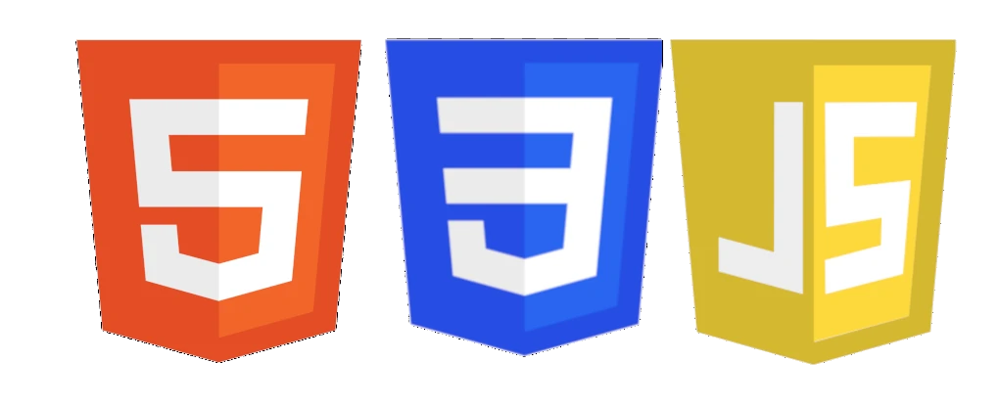

Como um site funciona?
📒 O que é um site?
Diariamente utilizamos a internet, seja para ver uma receita, descobrir um significado, assistir um vídeo no Instagram, Tiktok ou no Youtube, estamos em constante dependência das redes sociais e sites, mas você já se perguntou como um site funciona?se sim, você está no local certo, aqui iremos te explicar a base por trás de tudo que você usa no seu dia a dia.
❓ O que compõe um site
- Front-End
- é a parte visual e interativa de sites e aplicativos com a qual os usuários interagem diretamente. front-end utiliza HTML, CSS e JavaScript para transformar designs em interfaces responsivas, acessíveis e atraentes, focando na experiência do usuário.
- Back-end
- consiste nos dados e na infraestrutura que fazem sua aplicação funcionar. Ele armazena e processa dados da aplicação para seus usuários.
Linguagens do Front-End 🚪
- HTML (HyperText Markup Language)
-
é a linguagem de marcação padrão para criar a estrutura e o conteúdo de páginas web, organizando elementos como textos, títulos, imagens e links através de tags (ex:
<h1> <p>). É considerada o "esqueleto" do site, interpretada por navegadores, e não é uma linguagem de programação, sendo usada junto com CSS (estilo) e JavaScript (interatividade). - CSS (Cascading Style Sheets)
- é uma linguagem de estilo fundamental para estilizar e definir a apresentação visual de documentos HTML. Ela controla cores, fontes, layouts, responsividade e espaçamento, separando o conteúdo da estrutura visual. É essencial para design moderno.
- JS(JavaScript)
- JavaScript é uma linguagem de programação interpretada, leve e baseada em objetos, fundamental para tornar páginas web interativas e dinâmicas. Essencial ao desenvolvimento front-end, ela roda em navegadores, mas também no servidor com Node.js, permitindo criar aplicações complexas, sites, jogos e servidores, sendo um dos padrões web junto a HTML e CSS.

Linguagens do Back-end 🔙
- Java ☕
- Java é uma das linguagens de programação mais populares e versáteis do mundo, lançada pela Sun Microsystems em 1995 e atualmente sob a gestão da Oracle. Sua principal filosofia é o conceito "Write Once, Run Anywhere" (escreva uma vez, execute em qualquer lugar), o que significa que o código escrito em Java pode rodar em qualquer dispositivo que possua a JVM instalada.
- PHP (Hypertext Preprocessor)🐘
- é uma linguagem de script open-source focada no desenvolvimento web, executada no lado do servidor, que gera conteúdo dinâmico e se integra facilmente ao HTML. É amplamente utilizada em sistemas robustos e plataformas como WordPress, representando mais de 75% dos sites que usam linguagens de servidor.
Existe diversas linguagens que podem ser utilizadas, essas 2 linguagens são as mais famosas, mas existe outras como por exemplo:
- JavaScript (Node.js)
- Python
- C#
- Ruby